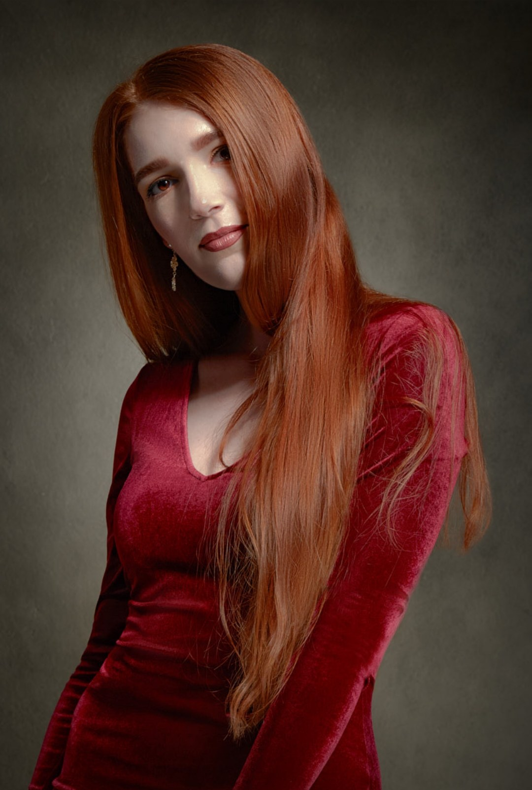
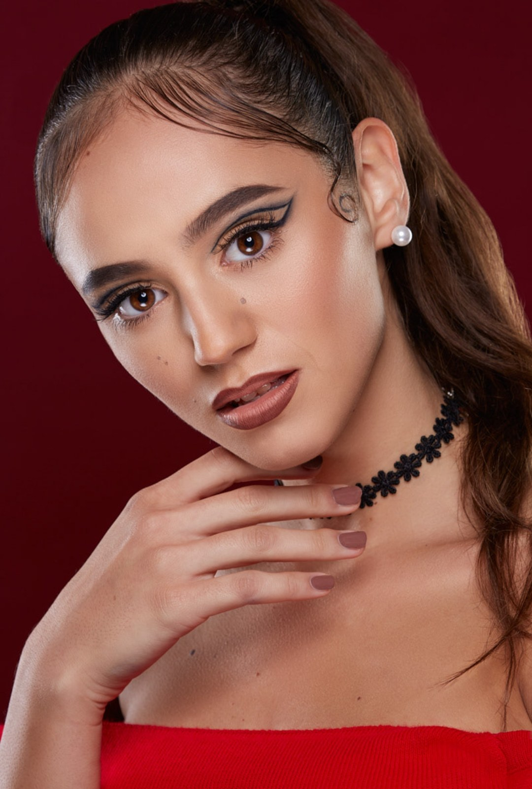
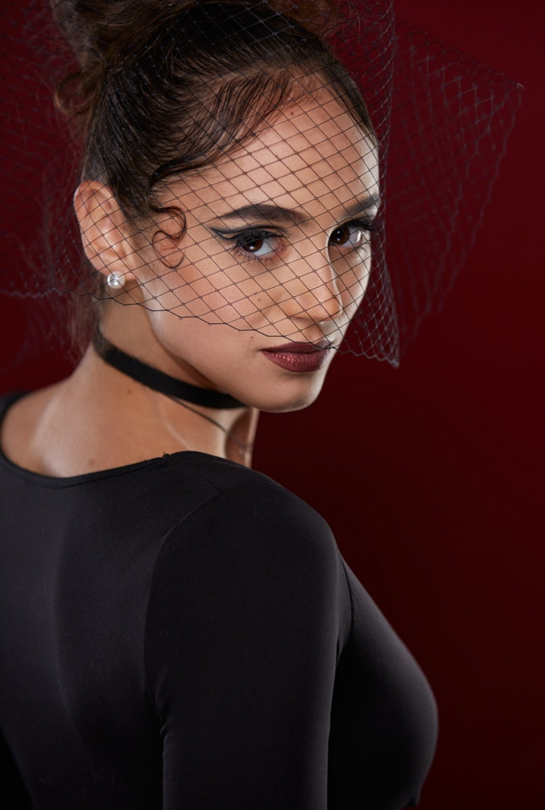
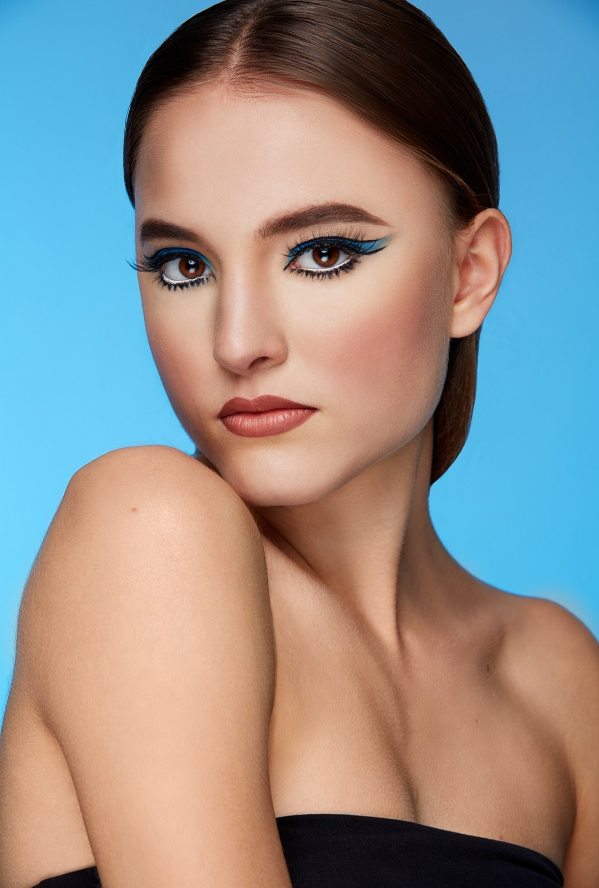
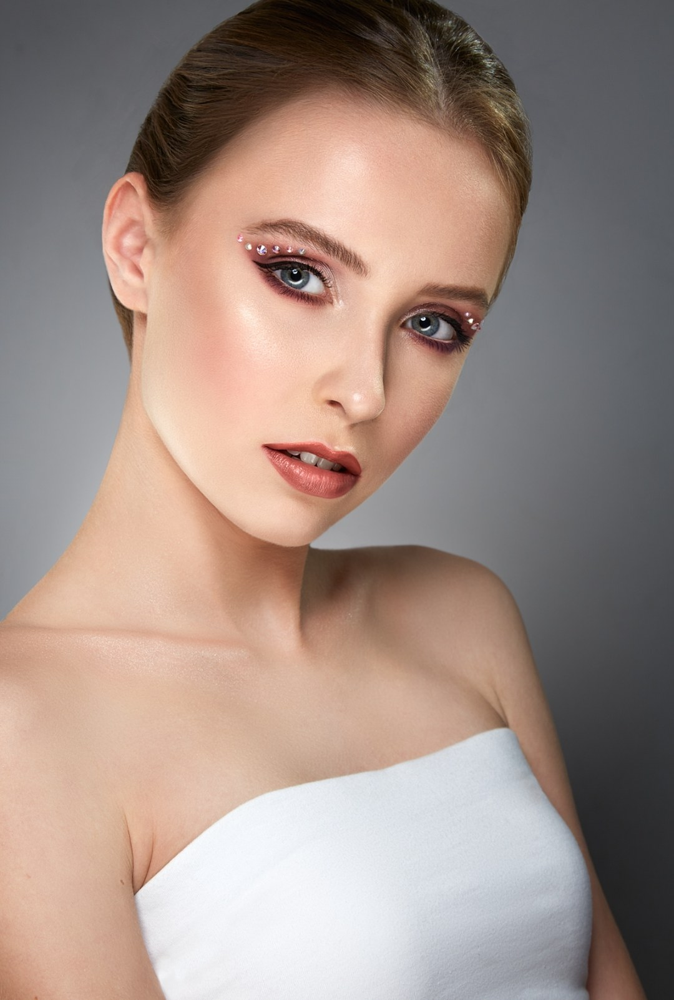
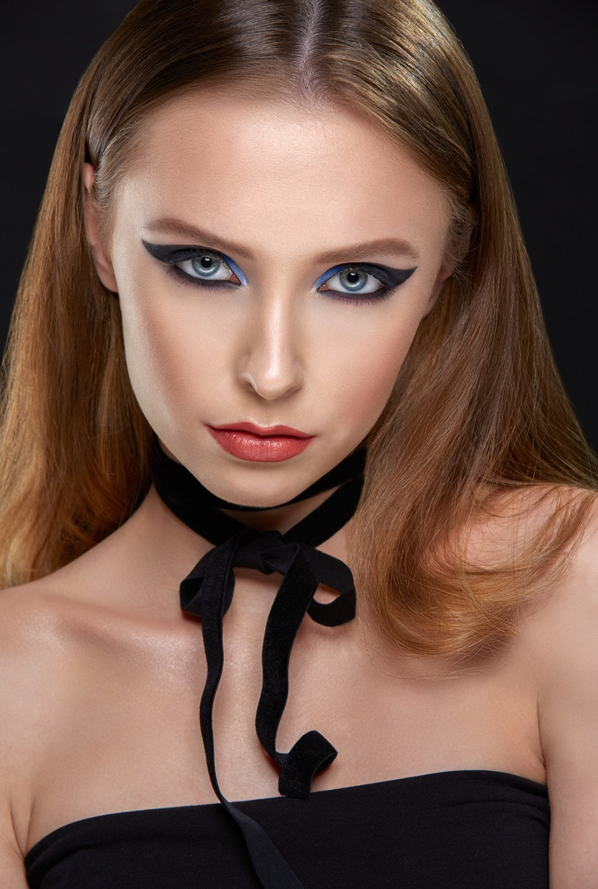
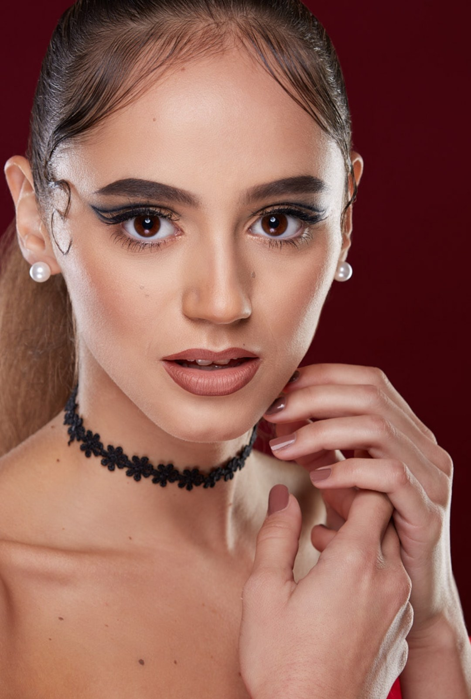

Beauty a portrét, ktorý drží pohľad.
Ateliérové svetlo, výrazný make-up a pleť bez plastového retušu.
19portrétnych sérií

Fotím modelky, make-up artistov a značky, ktoré chcú obraz s charakterom.
Dohodnúť fotenie →Vlasto Olach · Beauty & Portrait


„Svetlo robím pre tvár, nie pre štúdio.“ [citát od Vlasta]




Čerstvé fotky priamo z ateliéru. Táto časť sa aktualizuje sama, vždy keď pridám nový príspevok.
[Ukážka: tu sa automaticky zobrazí posledných 6 príspevkov z @olachphoto.]
Máte nápad na fotenie alebo len chcete pozdraviť? Ozvem sa do dvoch dní. [overiť]
[e-mail] Instagram · @olachphoto Facebook · OlachPhotography